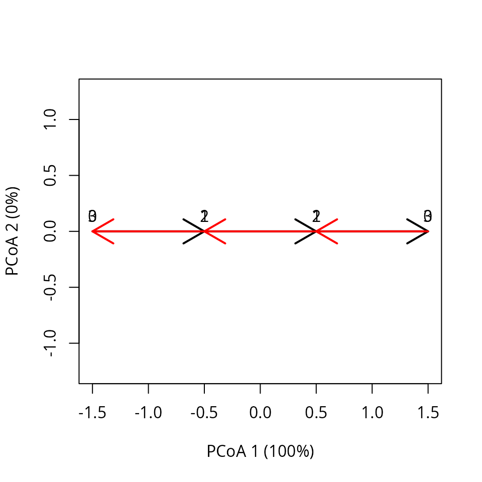
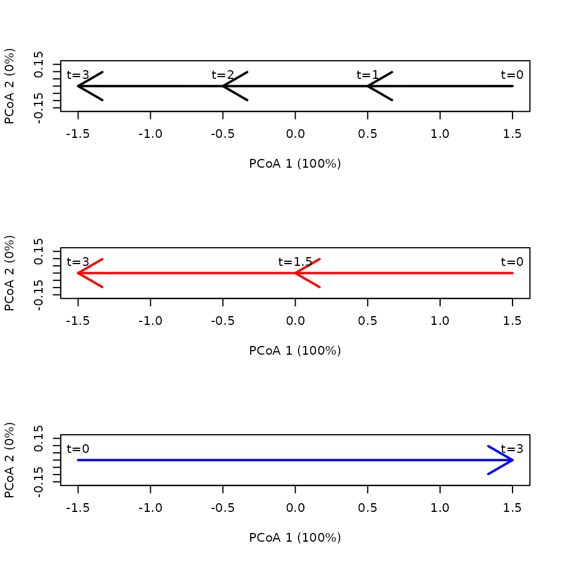
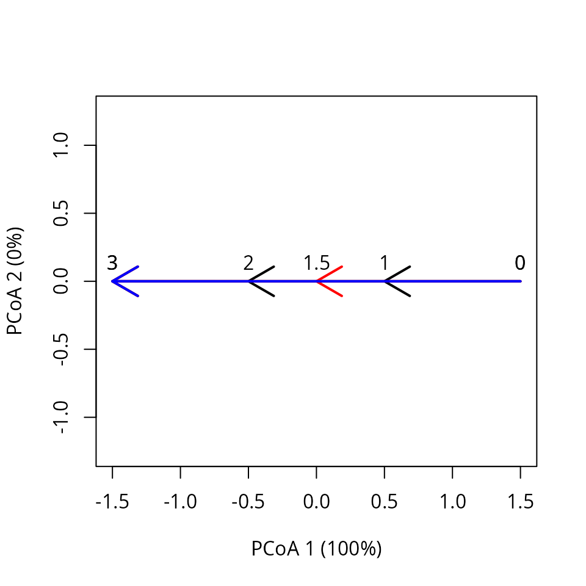
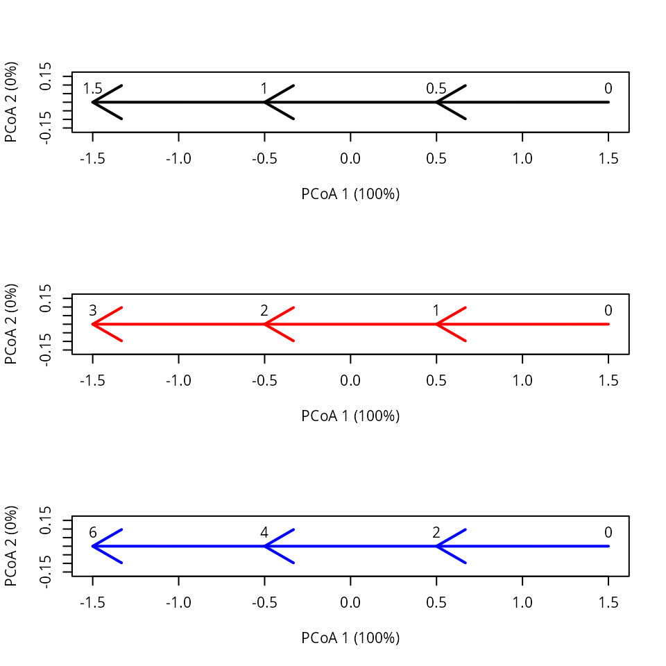
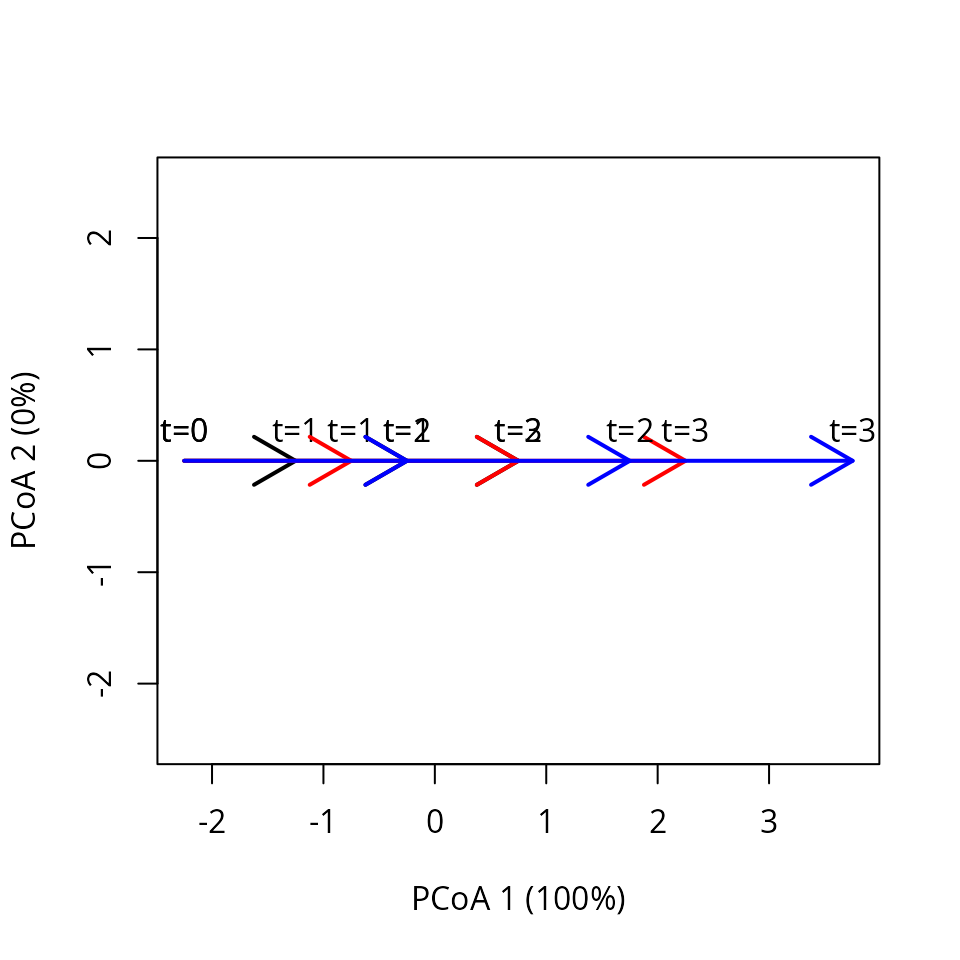

Distance metrics for trajectory resemblance
Miquel De Cáceres
2025-10-02
Source:vignettes/TrajectoryDistanceMetrics.Rmd
TrajectoryDistanceMetrics.Rmd1. Introduction
1.1 About this vignette
In this vignette you will learn the differences between three
distance coefficients available for assessing trajectory resemblance. We
use small datasets where trajectories occur in a space of two
dimensions, so that geometric calculations can be followed more easily.
First of all, we load ecotraj:
## Loading required package: Rcpp1.2 The three distance metrics
Let and be two trajectories to be compared. The first distance metric is Segment Path Distance (SPD) (Besse et al. 2016), defined as the average of the distances between each point composing and :
where is the distance between a point a a trajectory. SPD is not symmetric so it needs to be symmetrized:
SPD is appropriate to compare the location and shape of trajectories, but is not sensitive to trajectory direction. For this reason, De Cáceres et al. (2019) introduced the Directed Segment Path Dissimilarity (DSPD), defined as the average of the distance between each directed segment of and :
where is the distance between a segment and a trajectory. As before, DSPD is not symmetric so it needs to be symmetrized:
DSPD is an appropriate metric to compare the location, shape and direction of trajectories. Nevertheless, the metric does not allow taking into account differences in trajectory speed, because it does not use the information regarding the time of observations (only the survey order).
If and represent the dynamics of two sites that have been surveyed synchronously (i.e., if and ; ;… ; ), a straightforward way of comparing them is to calculate the average across surveys of dissimilarity between the two sites, i.e. the mean of the sequence . For a more general solution the Time-Sensitive Path Distance (TSPD) is the average of distances between each observation in and :
where is the distance between an observation and a trajectory. is the calculated as the distance between and the point in corresponding to time , which may need to be interpolated if does not correspond to any value in . If is beyond the time boundaries of , then the distance to the closest time point is taken. As before, TSPD is not symmetric so it needs to be symmetrized:
TSPD is sensitive to differences in location, shape, direction and speed, as will be illustrated in the following examples.
2. Linear trajectories
Let us first compare the behavior of the three distance metrics for comparisons between linear trajectories. In all cases, the reference trajectory is composed of three linear segments.
2.1 Oposed linear trajectories
We compare first a linear trajectory with its oposed one, i.e. a trajectory going in the exact oposite sense.
sites <- c("1","1","1","1","2","2","2", "2")
times <- c(0,1,2,3,0,1,2,3)
xy<-matrix(0, nrow=8, ncol=2)
xy[2,2]<-1
xy[3,2]<-2
xy[4,2]<-3
xy[5,2]<-3
xy[6,2]<-2
xy[7,2]<-1
xy[8,2]<-0
x <- defineTrajectories(dist(xy), sites = sites, times = times)We can display the two (overlapping) trajectories using:
trajectoryPCoA(x,
traj.colors = c("black", "red", "blue"), lwd = 2,
time.labels = TRUE)
The two trajectories have the same lengths and speeds:
## S1 S2 S3 Path
## 1 1 1 1 3
## 2 1 1 1 3## S1 S2 S3 Path
## 1 1 1 1 1
## 2 1 1 1 1When we examine trajectory (temporal) shifts we see the oposing character:
## reference site survey time timeRef shift
## 1 1 2 1 0 3 3
## 2 1 2 2 1 2 1
## 3 1 2 3 2 1 -1
## 4 1 2 4 3 0 -3
## 5 2 1 1 0 3 3
## 6 2 1 2 1 2 1
## 7 2 1 3 2 1 -1
## 8 2 1 4 3 0 -3Calculating SPD yields zero dissimilarity, because the distance does not take into account differences in direction:
trajectoryDistances(x, distance.type = "SPD")## 1
## 2 0The other two dissimilarity metrics do yield non-zero values:
trajectoryDistances(x, distance.type = "DSPD")## 1
## 2 1
trajectoryDistances(x, distance.type = "TSPD")## 1
## 2 22.2 Equal pathways and speeds but different number of segments
Here we compare three trajectories with the same linear pathway and speed. They only differ in the number of segments used to describe them:
sites <- c("1","1","1","1","2","2","2","3","3")
times <- c(0,1,2,3,0,1.5,3,0,3)
xy<-matrix(0, nrow=9, ncol=2)
xy[2,2]<-1
xy[3,2]<-2
xy[4,2]<-3
xy[6,2]<-1.5
xy[7,2]<-3
xy[9,2]<-3
x <- defineTrajectories(dist(xy), sites = sites, times = times)We plot the three trajectories in separate panels for clarity:
par(mfrow=c(3,1))
trajectoryPCoA(subsetTrajectories(x,"1"),
traj.colors = c("black"), lwd = 2,
time.labels = TRUE)
trajectoryPCoA(subsetTrajectories(x,"2"),
traj.colors = c("red"), lwd = 2,
time.labels = TRUE)
trajectoryPCoA(subsetTrajectories(x,"3"),
traj.colors = c("blue"), lwd = 2,
time.labels = TRUE) Note that reversals may occur because of PCoA eigen analysis. But together the trajectories look like:
trajectoryPCoA(x,
traj.colors = c("black", "red", "blue"), lwd = 2,
time.labels = TRUE)
We can check that the three trajectories have the same total length and average speed:
## S1 S2 S3 Path
## 1 1.0 1.0 1 3
## 2 1.5 1.5 NA 3
## 3 3.0 NA NA 3## S1 S2 S3 Path
## 1 1 1 1 1
## 2 1 1 NA 1
## 3 1 NA NA 1There are no temporal shifts between the trajectories:
## reference site survey time timeRef shift
## 1 1 2 1 0.0 0.0 0
## 2 1 2 2 1.5 1.5 0
## 3 1 2 3 3.0 3.0 0
## 4 1 3 1 0.0 0.0 0
## 5 1 3 2 3.0 3.0 0
## 6 2 1 1 0.0 0.0 0
## 7 2 1 2 1.0 1.0 0
## 8 2 1 3 2.0 2.0 0
## 9 2 1 4 3.0 3.0 0
## 10 2 3 1 0.0 0.0 0
## 11 2 3 2 3.0 3.0 0
## 12 3 1 1 0.0 NA NA
## 13 3 1 2 1.0 NA NA
## 14 3 1 3 2.0 NA NA
## 15 3 1 4 3.0 NA NA
## 16 3 2 1 0.0 NA NA
## 17 3 2 2 1.5 1.5 0
## 18 3 2 3 3.0 NA NAHere SPD yields zero distance, because the three trajectories have the same shape:
trajectoryDistances(x, distance.type = "SPD")## 1 2
## 2 0
## 3 0 0Since it is defined by means of distances between directed segments, DSPD seems to be affected by the different segmentation of trajectories, so that it yields non-zero values:
trajectoryDistances(x, distance.type = "DSPD")## 1 2
## 2 0.5833333
## 3 1.3333333 1.5000000In contrast, TSPD yields again zero distance values, because the trajectories do not differ in neither speed or shape.
trajectoryDistances(x, distance.type = "TSPD")## 1 2
## 2 0
## 3 0 02.3 Equal pathways but different speeds
In this example the three trajectories have the same segments and pathways, but they differ in the speed of changes:
sites <- c("1","1","1","1","2","2","2","2","3","3","3","3")
times <- c(0,0.5,1,1.5,0,1,2,3,0,2,4,6)
xy<-matrix(0, nrow=12, ncol=2)
xy[2,2]<-1
xy[3,2]<-2
xy[4,2]<-3
xy[5:8,2] <- xy[1:4,2]
xy[9:12,2] <- xy[1:4,2]
x <- defineTrajectories(dist(xy), sites = sites, times = times)Again we use separate plots to show the differences in speed:
par(mfrow=c(3,1))
trajectoryPCoA(subsetTrajectories(x,"1"),
traj.colors = c("black"), lwd = 2,
time.labels = TRUE)
trajectoryPCoA(subsetTrajectories(x,"2"),
traj.colors = c("red"), lwd = 2,
time.labels = TRUE)
trajectoryPCoA(subsetTrajectories(x,"3"),
traj.colors = c("blue"), lwd = 2,
time.labels = TRUE) We can check that there are no differences in segment or total path lengths, but they indeed differ in trajectory speed:
## S1 S2 S3 Path
## 1 1 1 1 3
## 2 1 1 1 3
## 3 1 1 1 3## S1 S2 S3 Path
## 1 2.0 2.0 2.0 2.0
## 2 1.0 1.0 1.0 1.0
## 3 0.5 0.5 0.5 0.5Differences in speed also lead to temporal shifts between trajectories:
## reference site survey time timeRef shift
## 1 1 2 1 0.0 0.0 0.0
## 2 1 2 2 1.0 0.5 -0.5
## 3 1 2 3 2.0 1.0 -1.0
## 4 1 2 4 3.0 1.5 -1.5
## 5 1 3 1 0.0 0.0 0.0
## 6 1 3 2 2.0 0.5 -1.5
## 7 1 3 3 4.0 1.0 -3.0
## 8 1 3 4 6.0 1.5 -4.5
## 9 2 1 1 0.0 0.0 0.0
## 10 2 1 2 0.5 1.0 0.5
## 11 2 1 3 1.0 2.0 1.0
## 12 2 1 4 1.5 3.0 1.5
## 13 2 3 1 0.0 0.0 0.0
## 14 2 3 2 2.0 1.0 -1.0
## 15 2 3 3 4.0 2.0 -2.0
## 16 2 3 4 6.0 3.0 -3.0
## 17 3 1 1 0.0 0.0 0.0
## 18 3 1 2 0.5 2.0 1.5
## 19 3 1 3 1.0 4.0 3.0
## 20 3 1 4 1.5 6.0 4.5
## 21 3 2 1 0.0 0.0 0.0
## 22 3 2 2 1.0 2.0 1.0
## 23 3 2 3 2.0 4.0 2.0
## 24 3 2 4 3.0 6.0 3.0If we calculate distances using SPD, the distance metric does not detect the differences in speed and tells us that the trajectories are equal:
trajectoryDistances(x, distance.type = "SPD")## 1 2
## 2 0
## 3 0 0And the same happens with DSPD:
trajectoryDistances(x, distance.type = "DSPD")## 1 2
## 2 0
## 3 0 0It is only when we apply TSPD that we can observe differences between trajectories:
trajectoryDistances(x, distance.type = "TSPD")## 1 2
## 2 0.6250
## 3 0.9375 0.6250The distance between the first and the third trajectory is largest because their difference in speed is also largest.
2.4 Space-shifted trajectories
Let us now evaluate a case where trajectories are the same but have been displaced in one dimension:
sites <- c("1","1","1","1","2","2","2","2","3","3","3","3")
times <- c(1,2,3,4,1,2,3,4,1,2,3,4)
xy<-matrix(0, nrow=12, ncol=2)
xy[2,2]<-1
xy[3,2]<-2
xy[4,2]<-3
# States are all shifted half unit with respect to site "1"
xy[5:8,2] <- xy[1:4,2] + 0.5
# States are all shifted one unit with respect to site "1"
xy[9:12,2] <- xy[1:4,2] + 1.0
x <- defineTrajectories(dist(xy), sites = sites, times = times)We use a single plot, though not very clear, to display the three trajectories:
trajectoryPCoA(x,
traj.colors = c("black", "red", "blue"), lwd = 2,
time.labels = TRUE) In this case differences do not exist in terms of lengths nor
speeds:
In this case differences do not exist in terms of lengths nor
speeds:
## S1 S2 S3 Path
## 1 1 1 1 3
## 2 1 1 1 3
## 3 1 1 1 3## S1 S2 S3 Path
## 1 1 1 1 1
## 2 1 1 1 1
## 3 1 1 1 1But (temporal) shifts reflect the spatial ones:
## reference site survey time timeRef shift
## 1 1 2 1 1 1.5 0.5
## 2 1 2 2 2 2.5 0.5
## 3 1 2 3 3 3.5 0.5
## 4 1 2 4 4 NA NA
## 5 1 3 1 1 2.0 1.0
## 6 1 3 2 2 3.0 1.0
## 7 1 3 3 3 4.0 1.0
## 8 1 3 4 4 NA NA
## 9 2 1 1 1 NA NA
## 10 2 1 2 2 1.5 -0.5
## 11 2 1 3 3 2.5 -0.5
## 12 2 1 4 4 3.5 -0.5
## 13 2 3 1 1 1.5 0.5
## 14 2 3 2 2 2.5 0.5
## 15 2 3 3 3 3.5 0.5
## 16 2 3 4 4 NA NA
## 17 3 1 1 1 NA NA
## 18 3 1 2 2 1.0 -1.0
## 19 3 1 3 3 2.0 -1.0
## 20 3 1 4 4 3.0 -1.0
## 21 3 2 1 1 NA NA
## 22 3 2 2 2 1.5 -0.5
## 23 3 2 3 3 2.5 -0.5
## 24 3 2 4 4 3.5 -0.5In this case, all three metrics are responsive to differences in trajectory location:
trajectoryDistances(x, distance.type = "SPD")## 1 2
## 2 0.125
## 3 0.250 0.125
trajectoryDistances(x, distance.type = "DSPD")## 1 2
## 2 0.5000000
## 3 0.3333333 0.5000000
trajectoryDistances(x, distance.type = "TSPD")## 1 2
## 2 0.5
## 3 1.0 0.52.5 Space-expanded trajectories
In this example, the three linear trajectories are surveyed the same times but they differ in total path length due to differences in trajectory speed.
sites <- c("1","1","1","1","2","2","2","2","3","3","3","3")
times <- c(0,1,2,3,0,1,2,3,0,1,2,3)
xy<-matrix(0, nrow=12, ncol=2)
xy[2,2]<-1
xy[3,2]<-2
xy[4,2]<-3
xy[5:8,2] <- xy[1:4,2]*1.5
xy[9:12,2] <- xy[1:4,2]*2
x <- defineTrajectories(dist(xy), sites = sites, times = times)We draw the three (overlapping) trajectories:
trajectoryPCoA(x,
traj.colors = c("black", "red", "blue"), lwd = 2,
time.labels = TRUE)
In this case both lengths and speeds are different between trajectories:
## S1 S2 S3 Path
## 1 1.0 1.0 1.0 3.0
## 2 1.5 1.5 1.5 4.5
## 3 2.0 2.0 2.0 6.0## S1 S2 S3 Path
## 1 1.0 1.0 1.0 1.0
## 2 1.5 1.5 1.5 1.5
## 3 2.0 2.0 2.0 2.0This is also translated to trajectory shifts:
## reference site survey time timeRef shift
## 1 1 2 1 0 0.0000000 0.0000000
## 2 1 2 2 1 1.5000000 0.5000000
## 3 1 2 3 2 3.0000000 1.0000000
## 4 1 2 4 3 NA NA
## 5 1 3 1 0 0.0000000 0.0000000
## 6 1 3 2 1 2.0000000 1.0000000
## 7 1 3 3 2 NA NA
## 8 1 3 4 3 NA NA
## 9 2 1 1 0 0.0000000 0.0000000
## 10 2 1 2 1 0.6666667 -0.3333333
## 11 2 1 3 2 1.3333333 -0.6666667
## 12 2 1 4 3 2.0000000 -1.0000000
## 13 2 3 1 0 0.0000000 0.0000000
## 14 2 3 2 1 1.3333333 0.3333333
## 15 2 3 3 2 2.6666667 0.6666667
## 16 2 3 4 3 NA NA
## 17 3 1 1 0 0.0000000 0.0000000
## 18 3 1 2 1 0.5000000 -0.5000000
## 19 3 1 3 2 1.0000000 -1.0000000
## 20 3 1 4 3 1.5000000 -1.5000000
## 21 3 2 1 0 0.0000000 0.0000000
## 22 3 2 2 1 0.7500000 -0.2500000
## 23 3 2 3 2 1.5000000 -0.5000000
## 24 3 2 4 3 2.2500000 -0.7500000Since the trajectories differ in length, this is captured by all three metrics:
trajectoryDistances(x, distance.type = "SPD")## 1 2
## 2 0.1875
## 3 0.5000 0.1875
trajectoryDistances(x, distance.type = "DSPD")## 1 2
## 2 0.7500000
## 3 1.3333333 0.9166667
trajectoryDistances(x, distance.type = "TSPD")## 1 2
## 2 0.75
## 3 1.50 0.753. Curved trajectories
In this second set of examples we examine the behavior of the metrics when comparing trajectories that are not always linear.
3.1 Constant speed
Here the three trajectories have the same length and speed, but trajectory 2 and 3 are progressively curved:
sites <- c("1","1","1","1","2","2","2","2","3","3","3","3")
surveys <- c(1,2,3,4,1,2,3,4,1,2,3,4)
xy<-matrix(0, nrow=12, ncol=2)
xy[2,2]<-1
xy[3,2]<-2
xy[4,2]<-3
xy[5:6,2] <- xy[1:2,2]
xy[7,1]<-0+sqrt(0.5)
xy[7,2]<-1+sqrt(0.5)
xy[8,2]<-xy[7,2]
xy[8,1]<-xy[7,1]+1
xy[9:10,2] <- xy[1:2,2]
xy[11,1] <- 1.0
xy[11,2] <- 1.0
xy[12,1] <- 1.0
xy[12,2] <- 0.0
x <- defineTrajectories(dist(xy), sites = sites, times = times)
trajectoryPCoA(x,
traj.colors = c("black", "red", "blue"), lwd = 2,
time.labels = TRUE)## Warning in cmdscale(d, eig = TRUE, add = TRUE, k = nrow(as.matrix(d)) - : only
## 10 of the first 11 eigenvalues are > 0As expected, no differences are found in terms of lengths or speeds:
## S1 S2 S3 Path
## 1 1 1 1 3
## 2 1 1 1 3
## 3 1 1 1 3## S1 S2 S3 Path
## 1 1 1 1 1
## 2 1 1 1 1
## 3 1 1 1 1The three distance metrics are responsive to differences of trajectory shape:
trajectoryDistances(x, distance.type = "SPD")## 1 2
## 2 0.5743683
## 3 0.6250000 0.4267767
trajectoryDistances(x, distance.type = "DSPD")## 1 2
## 2 0.7658244
## 3 0.9023689 0.6868867
trajectoryDistances(x, distance.type = "TSPD")## 1 2
## 2 0.7267030
## 3 1.1441228 0.65328153.2 Different speed
This example is similar to the previous one, but here we changed the survey times, so that the observed trajectory shapes correspond also to different speeds:
sites <- c("1","1","1","1","2","2","2","2","3","3","3","3")
times <- c(0,0.5,1,1.5,0,1,2,3,0,2,4,6)
xy<-matrix(0, nrow=12, ncol=2)
xy[2,2]<-1
xy[3,2]<-2
xy[4,2]<-3
xy[5:6,2] <- xy[1:2,2]
xy[7,1]<-0+sqrt(0.5)
xy[7,2]<-1+sqrt(0.5)
xy[8,2]<-xy[7,2]
xy[8,1]<-xy[7,1]+1
xy[9:10,2] <- xy[1:2,2]
xy[11,1] <- 1.0
xy[11,2] <- 1.0
xy[12,1] <- 1.0
xy[12,2] <- 0.0
x <- defineTrajectories(dist(xy), sites = sites, times = times)The trajectory plot looks as before, except for the time labels:
trajectoryPCoA(x,
traj.colors = c("black", "red", "blue"), lwd = 2,
time.labels = TRUE)## Warning in cmdscale(d, eig = TRUE, add = TRUE, k = nrow(as.matrix(d)) - : only
## 10 of the first 11 eigenvalues are > 0In this case trajectories differ in speed but not length:
## S1 S2 S3 Path
## 1 1 1 1 3
## 2 1 1 1 3
## 3 1 1 1 3## S1 S2 S3 Path
## 1 2.0 2.0 2.0 2.0
## 2 1.0 1.0 1.0 1.0
## 3 0.5 0.5 0.5 0.5The three metrics detect differences in shape, as before.
trajectoryDistances(x, distance.type = "SPD")## 1 2
## 2 0.5743683
## 3 0.6250000 0.4267767
trajectoryDistances(x, distance.type = "DSPD")## 1 2
## 2 0.7658244
## 3 0.9023689 0.6868867
trajectoryDistances(x, distance.type = "TSPD")## 1 2
## 2 0.9748813
## 3 1.4872932 0.8433407However, note that the values of SPD and DSPD are exactly the same to those of the previous example, whereas TSPD yields higher distance values because of the differences in trajectory speed.
4. References
Besse, P., Guillouet, B., Loubes, J.-M. & François, R. (2016). Review and perspective for distance based trajectory clustering. IEEE Trans. Intell. Transp. Syst., 17, 3306–3317.
De Cáceres M, Coll L, Legendre P, Allen RB, Wiser SK, Fortin MJ, Condit R & Hubbell S. (2019). Trajectory analysis in community ecology. Ecological Monographs 89, e01350.